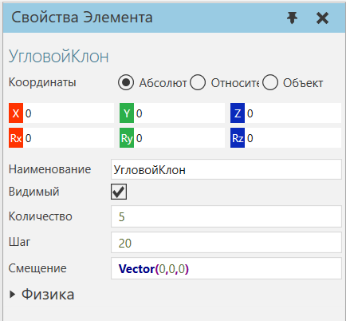
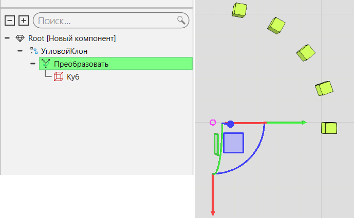

Угловой клон |
|
Элемент Угловой клон клонирует свои дочерние элементы вокруг своей оси Z. 
Как правило, вы должны использовать Угловой клон с функцией Преобразовать для определения радиуса и настройки положения клонированных объектов.  Характеристики
|